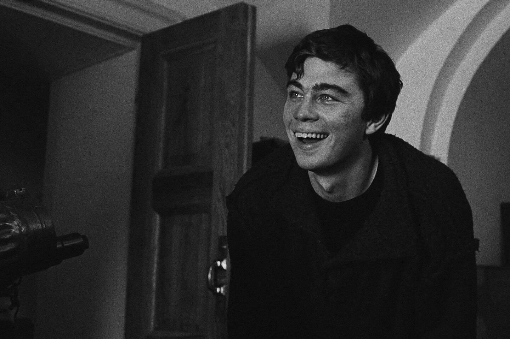

Фильм “Брат” рассказывает историю о том, как Данила пытается восстановить справедливость в мире, где закон и мораль не всегда идут рука об руку. В процессе он сталкивается с различными персонажами, такими как проститутка, ветеран войны, музыкант и даже американский актер, каждый из которых вносит свой вклад в его моральное развитие.

Легенда №17 - это вдохновляющая спортивная драма 2012 года, основанная на реальной истории советского хоккеиста Валерия Харламова. Фильм рассказывает о его пути к славе и признанию, начиная от простого деревенского парня, мечтающего стать профессиональным хоккеистом, до звезды мирового хоккея.
Продолжительность фильма: 2 ч 2 мин